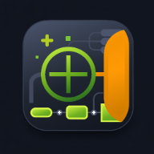

MindTree
Editar
Visualizar
Sem título
●
Remover filtro
Nível
Selecione...
Item
100%
⏮
⏪
▶
⏩
⏭
A árvore está vazia. Use o botão de mais para começar.
Planilha
×
Estilo
×
Formato do container
Cápsula
Retângulo
Cantos arred.
Altura do container
Máxima
Média
Mínima
Linhas de conexão
Suave
Reto
Arredondado
Ortogonal
Fontes
×
Tamanho da fonte
13px
Tipo de fonte
Padrão (sistema)
Serifada
Monoespaçada
Arredondada
Condensada
Estilo do texto
B
I
S
T
Alinhamento dentro do nó
Esquerda
Centro
Direita
Projetos
×
Novo projeto
Nenhum projeto salvo ainda.
Salvar
Salvar como novo
Menu
×
Projeto
Meus projetos
Reiniciar árvore
Aparência
Cores
Estilo
Fontes
Dados
Planilha
Importar
Exportar
Cores
×
Diferenciar cores até o nível
Cor da raiz
Paleta (em sequência)